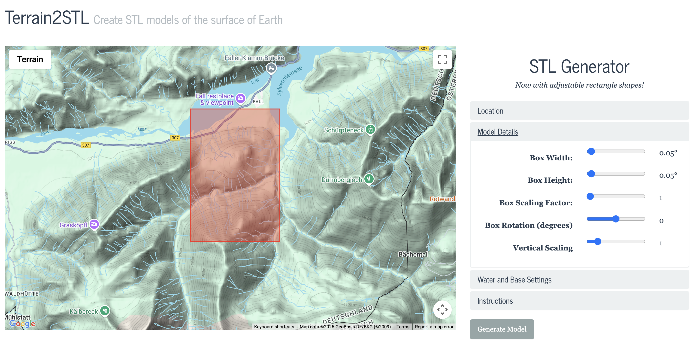

CNC Milling
For this week, our assignment pertained to fabricating a 3D/ 2.5D design using the CNC milling machine.
After understanding how the machine worked, I understood the limitation of this machine (compared to some other milling machines I found online) in that this one can only shave off material working from the top of the material to the bottom. It cannot work in all 3 dimensions, but rather similar to a chisel, can remove parts of the material until a relative shape is achieved
After thinking about this a bunch, I realized that it would be quite fun to try and create a map of a significant location from my life.
I decided to create a 3D map of the region where, about 2 winters ago, I had gone skiing (Brauneck, Germany). But, this was no ordinary trip. I actually ended up getting stranded on one of these mountains as I was skiing down, and I had to eventually be rescued by mountain rescue!
After trying to understand how I could go about this, I found that there was a few websites that could help me pinpoint and approximate the terrain features of the region.
The first one I used was Terrain2STL (https://jthatch.com/Terrain2STL/). I used google maps to find the coordinates of the region, and then messed around with some of the parameters on the website to try and get a good representation of the area. It seemed a little small, but I went with it anyway.
The Terrain2STL interface. Here are some of the parameters I messed around with to try and get an emphasis on the heights of the peaks of the mountains. Vertical scaling seemed to be the best here, where I ended up using a scale factor of around 2.5.
Here is the STL file I ended up creating using this:
Now, I had to go about figuring out how to get this into the CNC milling machine.
Using Bobby's help, I knew that I could directly import the STL file onto the shopbot computer. I did have to mess around a little with the cropping of the actual model based on the dimensions of the milling area I defined, but it was pretty straightforward.
However, I had to figure out how to turn this STL file on the shopbot software into a toolpath instructions for the CNC machine that would give me the resolution I wanted.

The map model imported into the toolpath editing software
Traditionally, we could simply use the profile tool and calculate the toolpath. However, this wouldn't work here since the model was both 3D and had a non-uniform design height across the model (since the mountains were all of different heights).
In solving this problem, I discovered the "3D Roughing" and "3D Finishing" toolpaths in the software.
The 3D Roughing toolpath would allow me to remove material from the model in a way that would be as efficient as possible, while the 3D Finishing toolpath would allow me to finish the model to a high precision.
However, even before I could choose these toolpaths, I encountered another problem.
The software was telling me that my map model was too thick to be milled on the machine with the material that was being used.

The software warning about the model thickness exceeding material limits
Turns out, even though I had found the thickest material available (~2cm of thickness), the map, at its current scale, was just too big.
Naturally, then, I had to scale down the model.
Scaling down the map model to fit within the material thickness constraints
I was also able to re-import the model and where the z-axis plane was on the model, and could remove a signifant chunk of the thick base that wasn't needed.
Processing the map model to remove unnecessary base material
This worked! Now, I could go back to the actual toolpath creation. Figuring out the existence of the 3D Roughing and Finishing toolpaths was a great solution to my problem, and I was able to use this to create a toolpath that would allow me to mill the model.
One thing I did need to consider, however, was that in order to get the desired 'finish' from the 3D finishing toolpath, I would need to use a smaller and finer bit. No worries, though – Kassia taught me how to replace the bit on the machine!
For the 3D Roughing toolpath, I used a 1/8" bit, while for the 3D Finishing toolpath, I used a 1/16" bit.
Here are the toolpaths I created:

The 3D Roughing toolpath - notice how it efficiently removes material in broad strokes

The 3D Finishing toolpath - much finer detail and precision in the final pass
I then wanted to try a test mill to see if this roughing and finishing technique would work. So, I used a cardboard-like material that had a relatively good thickness, and tried my luck.
Unfortunately, due to a small oversight, I messed up the cut slightly this first time around. After I replaced the bit, I ended up not recalibrating the mill properly, and the finishing toolpath ended up just creating a new cut altogeher:
Two accidental separate cuts – one from the 3D Roughing toolpath and one from the 3D Finishing toolpath
BUT, as frustrating as this was, it ended up letting me replace the CNC Bit a few times, allowing me to practice.
Timelapse of replacing the CNC bit - getting more comfortable with the process each time
This practice run showed me that the machine's resolution was indeed good, and that the finer toolbit would be good too. One thing I also noticed was that when the fine toolbit started cutting into the material, since there weren't any prior cuts in that area, the material actually started to smolder a little. I suspect this was because of the massive amount of friction paired with tiny bit that was causing the CNC head to head up and cause the cardboard-like material to smoke/smolder slightly in response.
I had initially wondered if I could go straight to the finishing toolpath with the 1/16" bit, but with the way this material responded, I had to ensure there was a roughing pass that the finer bit can go over – else I risk a fire
Now that I had this practice run out of the way, I felt more confident do make the cut on an actual wood piece.
So, to make the cut, I chose to use a piece of plywood (~20mm thick) that was available in the PS70 lab.
Following all the same procedures as before (i.e creating the toolpath, etc), I was able to make a pretty good cut on this piece of wood.
However, it appears that there was another problem that had occured.
As from what I could tell, plywood is made up of multiple layers and pieces of wood going in random directions and glued together into place. With this structure, when the mill went through and cut it, parts of the wood just seemed to splinter and break off. They just came off and the cuts became unreliable in terms of their intended vs actual shape.
The final cut on the wood piece – there is a bunch of splintering visible
I did not know how to solve this, as almost all the large materials available were plywood.
I suspected there were two issues (apart from the material itself) that were also contributing to this problem: the design itself effectively only had one mountain peak, and it wasn't extrelemy high since I could not cut a tall piece. Moreover, the entire design was compressed into a small area, which I suspect also caused issues since there were finer details all placed into a really small area.
In efforts to fix these issues, I decided to use another website to try and get a better detailed representation of the terrain.
I first used TouchTerrain (https://touchterrain.geol.iastate.edu/):

TouchTerrain map of the region
But, although I was able to get some good details, it wasn't as much as I wanted. Turns out that this website had the best qaulity resolution for US-based locations, and worldwide maps apart from this had much less depth to them.
So, I decided to try another website, called map2stl.com
This website, altough with much less settings to mess around with, ended up giving me the best results. And it even gave me a preview so I could adjust before I downloaded (unlike the other two where I had around 5 files per website just for trial and error)!

Map2STL User interface
Just to have flexibility and to see what worked with the CNC shopbot software, I decided to create 2 different models, one that focused in on 1-2 mountains, and one that was a little larger. Here are the models:
Model 1
Model 2
But, this didn't solve the plywood splintering issue I was also facing. Thankfully, after raising the concern in class, Wyatt came to the rescue!
Turns out, he had some leftover wood material that he'd bought from Home Depot! It wasn't made up of layers, but rather a solid piece of wood that wouldn't splinter.
AWESOME! So, I decided to try it out on this material.
How this new material looked like. It seems to be quite different to plywood!
The only issue I seemed to face was that this material was quite thick. It was slightly more thicker than the plywood I was using before, so I faced issues in getting the nailgun to anchor it to the CNC bed.
Sometimes the wood would crack and break apart from where the nailgun shot the nail, sometimes the nailgun couldn't even break the surface, sometimes the nailgun would get the nail through but it wouldn't reach the bottom of the wood, and sometimes the nail would even just explode instead of going through the wood.
Many tries of trying to get the nails in, the wood appeared to be anchored so I decided to go ahead and make the cut.
TURNS OUT, it was not anchored at all. It just seemed to slightly be stuck in place and was not strong whatsoever.
As soon as I started the cut, the drill went into the wood, the wood spun around the drill bit, SHOT UP, and FLEW OFF THE BED. It broke the drill bit in the process :(
The broken drill bit – the wood flying around seemed to have cleanly split the bit
I ended up having to replace the bit again.
I also then decided to sand down this chunk of wood to make it thinner. After about 10 minutes of using the sanding machine, it was visibly thinner.
I then tried again, and after pushing the nailgun down as much as I could... IT ANCHORED!
Awesome! So, I went ahead and made the cut, using the same toolpaths and processes as before. This is how it turned out:


The mountain cut from different angles!
SUCCESS! I CNC'd the Brauneck map onto a piece of wood!